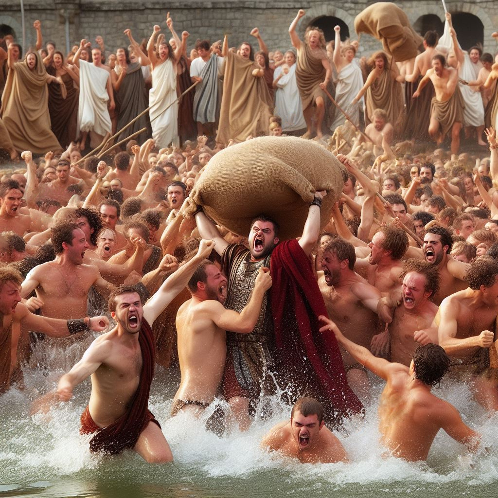
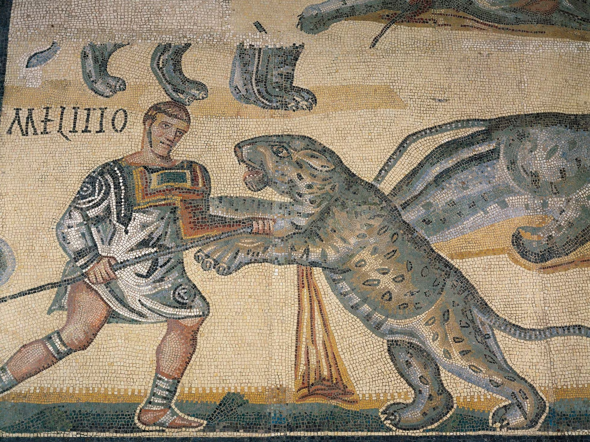

En este apartado vas a encontrar diferentes datos interesantes y
llamativos sobre sociales
La era mas dorada de la medicina
En siglos pasados, el oro era recetado como medicina. La gente
pudiente masticaba láminas de oro y era añadido a las comidas en
forma de polvo, como si fuera un condimento. Por ejemplo, los
alquimistas del rey francés Luis XIII (1601-1643) le hacían beber
gran cantidad de oro líquido para enderezar su maltrecha salud.

Roma: Castigo por matar al padre
El castigo por matar al padre era un crimen que era altamente
sancionado, lanzando al asesino al agua para que se ahogara,
dentro de un saco junto a una víbora, un gallo y un perro.

Los romanos acabaron con los leones en el norte de África
Antiguamente, los leones eran parte de la fauna del norte de
África, sin embargo, todo eso cambió con la llegada del imperio
romano y su tradicionales luchas de gladiadores en el Coliseo. En
una ocasión, los juegos llegaron a durar 100 días continuos,
motivo por el que se acabó con la población de leones, animales
que eran un clásico en estas luchas.
Los baños eran un lugar crucial para la vida social.
En la antigua roma los baños publicos no solo se utilizaban para
la higiene personal, sino también como centros de reunión, donde
las personas discutían política, negocios y otros asuntos
importantes. Los baños eran un punto de encuentro vital para la
comunidad romana.